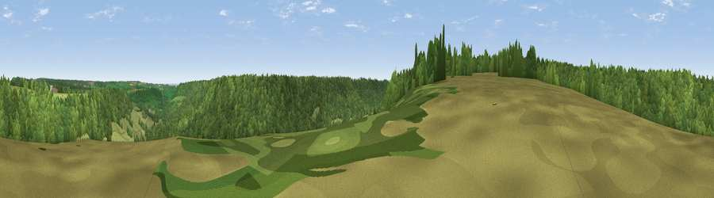

Viewpoint near Langdale End
#28154 in England · top 58% of its area beats it · near Langdale EndWhere it is
The exact computed spot (SE 92325 89575). Click the marker for map links.
The view, rendered

A 360° render of this exact spot computed from the terrain model, tree cover and land cover — summer colours, afternoon light, calibrated against photographs of famous viewpoints. Real trees, hedges and buildings will differ in detail.
The panorama
Grey silhouette: terrain skyline in each direction (720 bearings, Earth curvature and refraction included). Dashed green: skyline with trees (+15 m) and buildings (+8 m) as obstacles. Blue strip: how far the ground is visible on each bearing.
Where the view opens
Wedge length = distance to the farthest visible ground on that bearing (vegetation-aware). Rings at 10, 25 and 50 km.
What fills the view
56% woodland · 42% grassland · 1% cropland ·
Angular shares of the visible panorama (visual magnitude), not map area. Landscape diversity 0.34 (0–1 Shannon).
Key numbers
More beautiful places nearby
The staircase of upgrades: each row has a higher view potential than everything closer. Driving times are estimates from straight-line distance, calibrated against real road routing — check an actual route before setting out.
| Place | Direction | Drive | Score |
|---|---|---|---|
| Viewpoint near Sawdon | S · 3 km | ~6 min | 50.2 |
| Viewpoint near Langdale End | NNW · 3 km | ~7 min | 52.2 |
| Langdale Rigg End | N · 5 km | ~11 min | 65.1 |
| Viewpoint near Burniston | ENE · 7 km | ~14 min | 74.3 |
| Viewpoint near Burniston | ENE · 7 km | ~15 min | 78.3 |
| Viewpoint near Staintondale | NE · 11 km | ~20 min | 80.4 |
| Viewpoint near Ravenscar | NNE · 13 km | ~23 min | 87.3 |
| Viewpoint near Ravenscar | NNE · 13 km | ~24 min | 90.0 |
54.29346, -0.58303 · source: screening · position refined by local search. Computed location — check access rights before visiting.